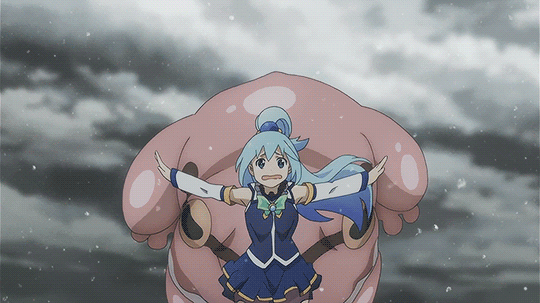

・Aventurero・
Es el principal protagonista de Konosuba. Luego de haber muerto del susto y mearse encima, Aqua le dio la oportunidad de reencarnar en el Reino de Belzerg para vencer al Rey Demonio. Como solo podía llevarse una cosa, Kazuma la escogió a ella por burlarse de él, y así formar equipo en el nuevo mundo.
・Arcipreste・
Aqua es la Diosa del Agua y la deidad que envía a Kazuma a otro mundo. A pesar del impresionante título, las cosas no le han ido según lo planeado. Primero, Kazuma la trajo con él al otro mundo en lugar de pedirle algún tipo de objeto trampa todopoderoso. Para empeorar las cosas, la Orden del Eje no la reconoce como su diosa.
・Archimaga del Clan Carmesí・
Megumin es una archimaga de los Demonios Carmesí, un grupo de magos que generalmente tienen cabello oscuro y ojos rojos. Tener un usuario de magia tan talentoso en su grupo es una gran bendición, ¿verdad? Bueno, Megumin está notoriamente obsesionada con la Magia de Explosión. Por un lado, es extremadamente poderoso y casi siempre hace el trabajo. Por otro lado, sólo puede lanzarlo una vez al día.
・Cruzado・
Darkness es una mujer rubia de clase cruzada que empuña una espada, actúa como el tanque del grupo y, en general, se parece al típico caballero con armadura brillante. Si bien Darkness puede resistir casi cualquier ataque (como se espera de un tanque), también es un poco masoquista. Eso no sería un problema si no fuera por el hecho de que le gusta demasiado recibir golpes. Debido a esto, Darkness termina recibiendo más daño del que reparte, lo que puede llevar a que no realice un solo ataque a cambio.